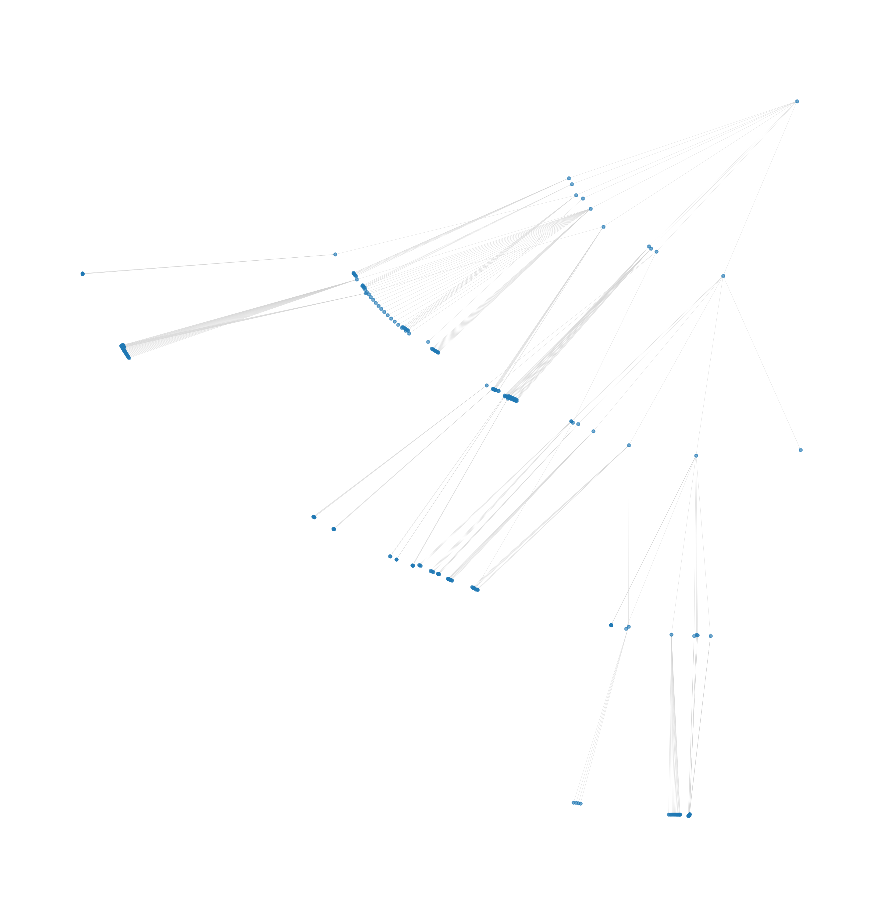

Insight: The Kamada-Kawai algorithm models the tree hierarchy as a system of springs. It attempts to position nodes so that the geometric distance between them matches their graph-theoretic path distance. This naturally separates the distinct branches of the Flare package hierarchy, ensuring that related classes group tightly while independent sub-packages repel each other.